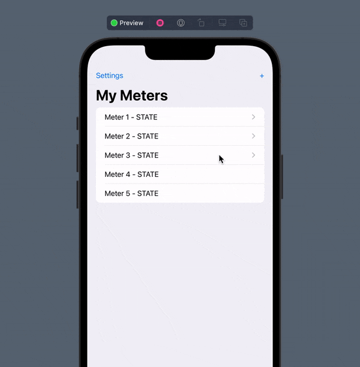
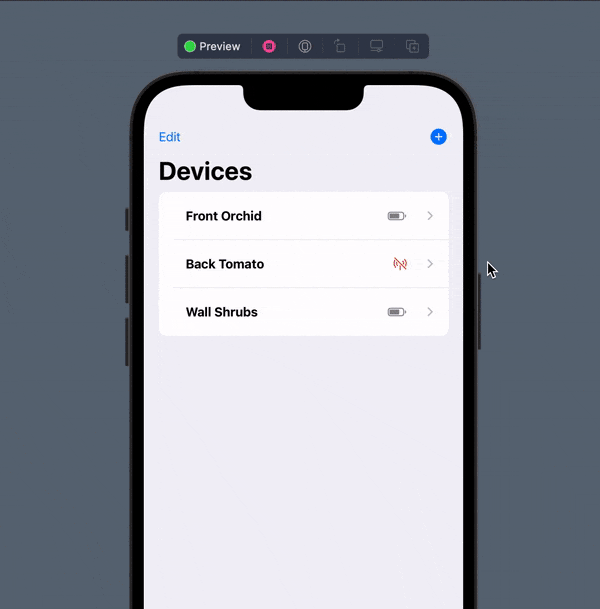

the following is some text
SwiftUI
My interest in this language began recently in May 2022. After collaborating with other students who were well-versed with Swift, I decided it would be a fun personal-goal to see how much I could learn about this language throughout the summer.
To do so, I began the 100 Days of SwiftUI challenge which combines the language with an emphasis on app development (a topic that I find great interest in). Hence, the following section is dedicated to hosting a portfolio of my advancements with SwiftUI. They might seem like small and simple programs, but each accomplishment is another step closer towards mastery.
| Column 1 | Column 2 |
|---|---|

Navigation ViewCaptured from an early test model for the PlantPal application. Features a simple implementation of a list of links to seperate views. |

ZStacksAlso captured from PlantPal. Showcases a simple ZStack with two views: an image and a pre-programmed radial bar. The result is the illusion that the health-bar wraps around the image. |
| test placeholder 1 | test placeholder 2 |
| test placeholder 3 | test placeholder 4 |
Reserved for future experiments (ie. Python, PHP, SQL)
SwiftUI won't be my only endeavor. Throughout the future, I have plans to explore other languages that I've once never had the time to do so. Some of the langauges are titled above, which I soon hope to showcase on this page throughout the future. Stay tuned!